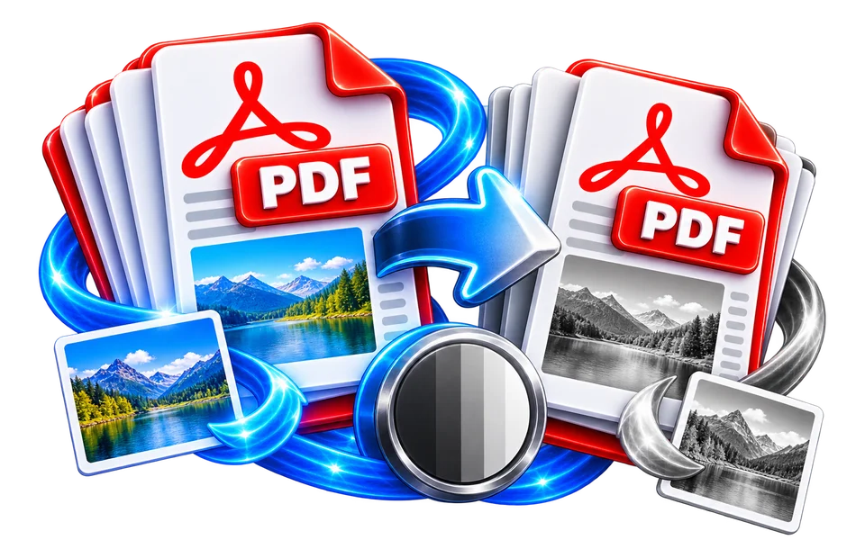

Upload the colour PDF
Convert a colour chart to grayscale and ensure its categories are still distinguishable.
Render PDF pages in grayscale and create a new PDF.
Removing colour can obscure distinctions in charts that depended only on hue.

Convert a colour chart to grayscale and ensure its categories are still distinguishable.
Prepare a monochrome PDF for printing.
Colour distinctions in charts may become harder to read.
Convert a colour chart to grayscale and ensure its categories are still distinguishable.
Red and green series in a chart might both become similar grey shades. Look for labels, patterns and line styles that remain distinguishable after conversion.
Use the real tool above to verify the result. The example illustrates the workflow, not a guaranteed outcome.
Red and green series in a chart might both become similar grey shades. Look for labels, patterns and line styles that remain distinguishable after conversion.
Grayscale output reduces colour, not necessarily file size. A document may still contain large page images.

Removing colour can obscure distinctions in charts that depended only on hue.
Removing colour can obscure distinctions in charts that depended only on hue.
Convert a colour chart to grayscale and ensure its categories are still distinguishable.
Red and green series in a chart might both become similar grey shades. Look for labels, patterns and line styles that remain distinguishable after conversion.
Converting PDF pages to grayscale can be useful for black-and-white printing, archival previews or reducing distracting colors in a form. A red heading and a blue heading may turn into similar grey tones even though they looked distinct on screen. If a chart relies only on color to differentiate lines, a grayscale version can lose important meaning. Before publishing the result, inspect diagrams, warning labels and signatures, not merely the white background. A grayscale export changes visual appearance; it does not change the legal content or automatically improve accessibility.
A typical grayscale calculation derives luminance from weighted red, green and blue channels rather than simply choosing one of them. Green contributes more to perceived brightness than blue in common conversion models. Therefore two colors with similar numeric channel sums can produce different greys. The output may be a set of rasterized page images inside a PDF rather than original vector text, depending on the chosen engine. If text becomes unselectable after conversion, that is a substantial preservation difference even when the print looks visually accurate.
For a photographic brochure, a grayscale version may be appropriate for a monochrome print run; for a medical or engineering diagram, removing color can conceal distinctions that a specialist needs. If the source contains colored annotations, compare their grayscale contrast at the actual print scale. Avoid assuming that an ordinary home printer produces better results with any particular PDF conversion—printer drivers may offer their own black-and-white settings while keeping the source PDF intact.
A company logo converted to grayscale may not follow its official monochrome brand design. A carefully designed black-and-white logo often uses different contrast or outline choices rather than automatic desaturation. For formal submissions, check whether color originals are required before altering them. If the document has highlighting to indicate reviewer comments, important emphasis may disappear when highlights and background reach similar grey levels.
Reopen the output and compare page count, orientation and margins against the original. Inspect at least one text-heavy page and one graphic-heavy page at normal reading size. If the PDF was rasterized, the file can become larger and search may stop working; OCR or a different preservation workflow may be needed. Do not promise that grayscale always compresses a file. Some rasterized outputs are larger because every page is stored as an image even when much of the original PDF consisted of compact text drawing instructions.
Color is often informational, not merely decorative. A report might mark overdue entries in red and paid entries in green; converting it to grayscale can make those categories indistinguishable if their original brightness is similar. Before exporting, check that charts use labels, patterns or distinct lightness values rather than color alone. An image-based grayscale conversion may also flatten editable text and vector elements, depending on implementation. Inspect small fonts at 100% and test printing on the target printer. For accessibility, grayscale output should retain readable contrast and meaningful category labels; it cannot automatically repair a chart that depends entirely on color semantics.
A chart using red and green lines can become ambiguous when converted to grayscale, because distinct hues sometimes map to similar brightness values. Check printed or exported contrast rather than assuming all coloured elements remain identifiable. Add labels or line patterns when the document's meaning depends on colour distinctions. Grayscale is not the same as thresholding every pixel to pure black or white; intermediate grey tones may remain. Photographs with weak contrast can lose subtle detail if heavily reprocessed. Keep the original coloured file and verify every page after conversion, not just the first preview image.
Not automatically. Colours of similar brightness can become hard to distinguish.
Not automatically. Colours of similar brightness can become hard to distinguish.
No. Grayscale retains many shades between black and white; a thresholded monochrome image generally contains only two tones.
No. Output size depends on image content, encoding and whether the engine rebuilds pages.
Not always. Colours that were distinguishable by hue may become indistinguishable in luminance.